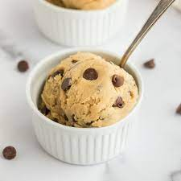

Edible Cookie Dough

Description
This homemade cookie dough is made with heat-treated flour and is completely egg-free.
Ingredients
- 2 1/4 c. all-purpose flour
- 1 1.2 c. light brown sugar
- 1 c. unsalted buttr, at room temperature
- 1 tsp. vanilla extract
- 2 tbsp. milk
- 1 tsp. kosher salt
- 1 c. chocolate chips
Steps
- For the heat-treated flour: Place the flour in a large bowl. Microwave on high in 30 second intervals, until a digital thermometer inserted into the flour reads 165 degrees (check the temperature in multiple spots to get an accurate read). Stir well, then let cool completely. Remove any small clumps.
- Combine the brown sugar and butter in a large bowl. beat with a hand mixer with a paddle attachment until creamy and well combined, about 2 minutes, Add in the vanilla and milk and mix until combined
- In a small bowl, combine the salt and heat-treated flour. Add the flour mixture to the butter mixture in 2 to 3 batches, mixing thoroughly to combine between each addition. With the mixer on low, add in your chocolate chips and mix just until combined.